第 10 章：RDB 持久化¶
Redis 服务器数据库示例。
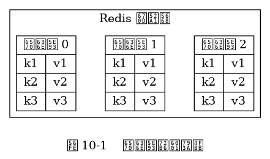
Redis 保存和载入 RDB 文件的流程。
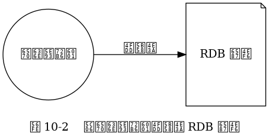
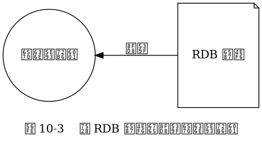
RDB 文件的创建与载入¶
服务器判断是载入 RDB 文件还是载入 AOF 文件的流程。
![digraph {
label = "\n图 10-4 服务器载入文件时的判断流程";
node [shape = box];
//
server_star [label = "服务器启动", width = 3]
start_load [label = "执行载入程序", width = 3];
aof_or_not [label = "已开启 AOF 持久化功能？", shape = diamond];
load_by_aof [label = "载入 AOF 文件"];
load_by_rdb [label = "载入 RDB 文件"];
//
server_star -> start_load -> aof_or_not;
aof_or_not -> load_by_aof [label = "是"];
aof_or_not -> load_by_rdb [label = "否"];
}](_images/graphviz-4ddd2cbff384c68e915d11f1d661f7f3c4cb71f6.png)
负责创建和载入 RDB 文件的两个函数之间的关系。
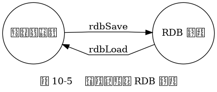
自动间隔性保存¶
记录了服务器触发自动 BGSAVE 条件的 saveparams 属性。
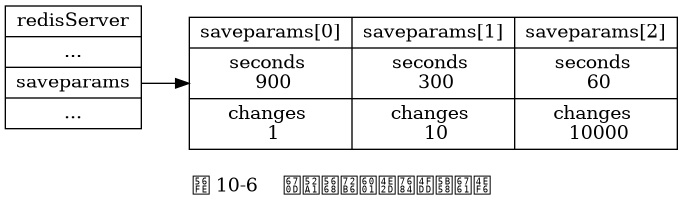
记录服务器最后一次执行 SAVE 或者 BGSAVE 的时间，
以及自最后一次保存 RDB 文件以来，
服务器进行了多少次写入的 lastsave 属性和 dirty 属性。
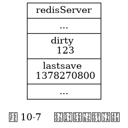
用于记录和检查服务器是否需要自动执行 BGSAVE 的相关属性和数据结构的示例。
![digraph {
label = "\n图 10-8 服务器状态";
rankdir = LR;
node [shape = record];
//
redisServer [label = " redisServer | ... | <saveparams> saveparams | ... | dirty \n 123 | lastsave \n 1378270800 | ... "];
saveparams [label = " { { saveparams[0] | seconds \n 900 | changes \n 1 } | { saveparams[1] | seconds \n 300 | changes \n 10 } | { saveparams[2] | seconds \n 60 | changes \n 10000 } } "];
//
redisServer:saveparams -> saveparams;
}](_images/graphviz-d86de7a06d4dd613f9296fb210b3de50c280111d.png)
RDB 文件结构¶
RDB 文件的总体结构。
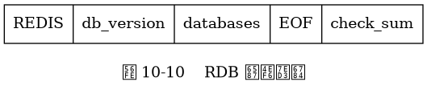
包含数据库 0 和数据库 3 的非空 RDB 文件结构示例。
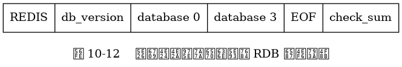
RDB 文件中的数据库结构。
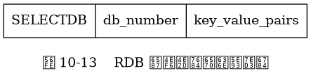
示例。
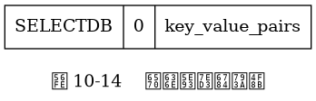
包含了数据库部分的 RDB 文件示例。
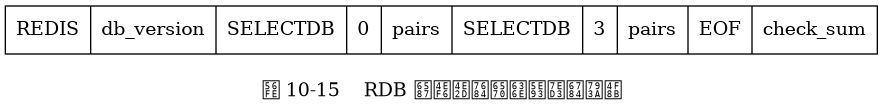
不带过期时间的键值对结构。
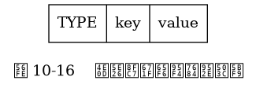
示例。
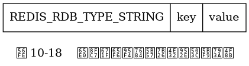
带有过期时间的键值对结构。
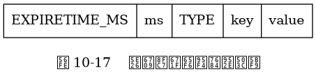
示例。
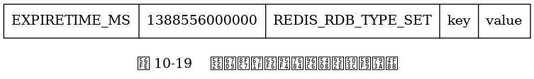
int 编码的字符串对象的结构。
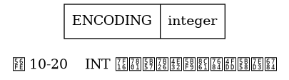
示例。
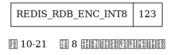
内容没有被压缩的字符串对象的结构。
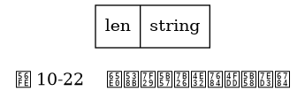
示例。
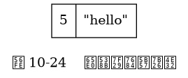
内容被压缩后的字符串对象的结构。
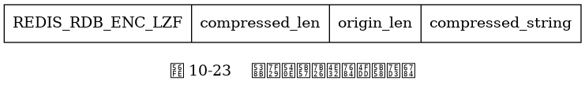
示例，
其中 ? 代表的是无法用字符串形式打印出来的字节。
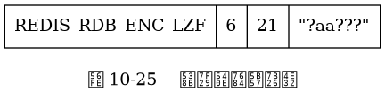
列表对象的结构。
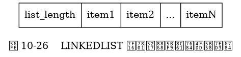
示例。
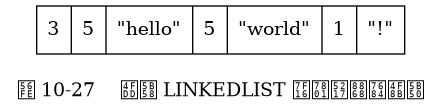
集合对象的结构。
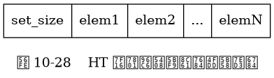
示例。
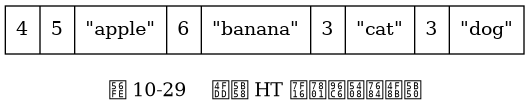
哈希对象的结构。
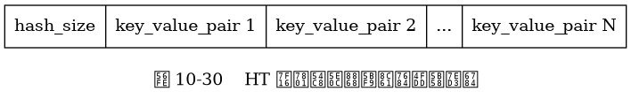
更详细的哈希对象结构。
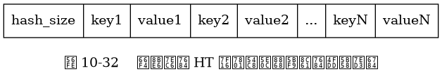
示例。
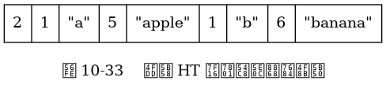
有序集合对象结构。
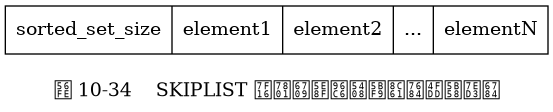
更详细的有序集合对象结构。
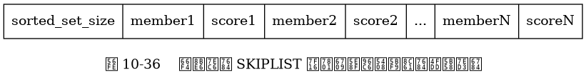
示例。
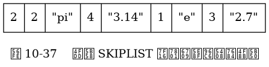